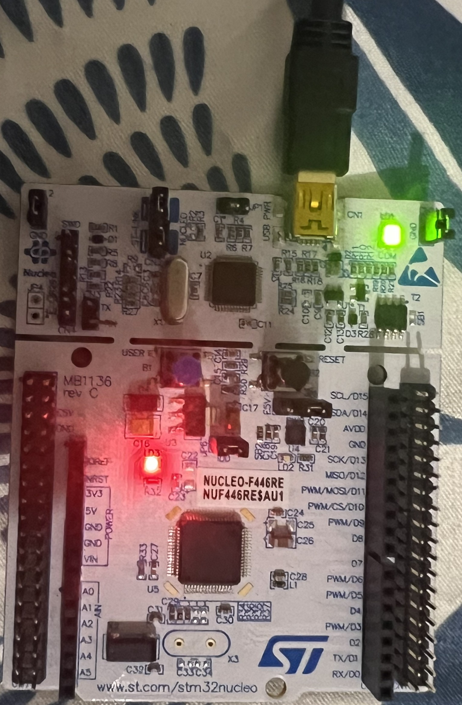
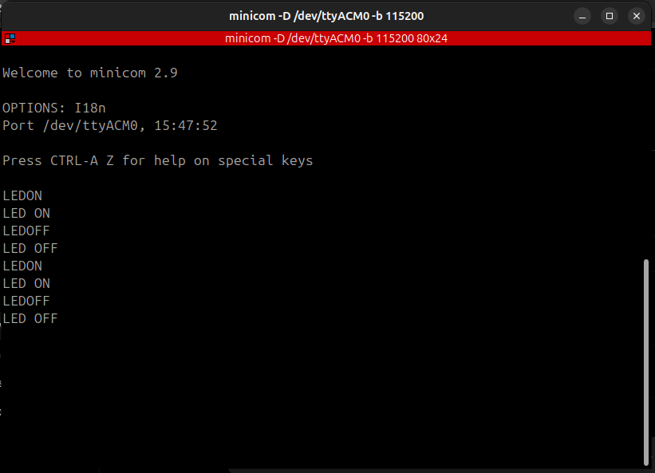

About Me
Embedded firmware engineer focused on ARM Cortex-M microcontrollers using Embedded C, STM32 HAL, UART, SPI, I²C, GPIO and RTOS. I enjoy building hands-on firmware projects that interface directly with hardware.
Embedded firmware engineer focused on ARM Cortex-M microcontrollers using Embedded C, STM32 HAL, UART, SPI, I²C, GPIO and RTOS. I enjoy building hands-on firmware projects that interface directly with hardware.


Developed a UART command parser on the STM32 NUCLEO-F446RE using Embedded C and STM32 HAL. The firmware receives commands over USART2, parses text commands, controls the onboard LED, echoes responses and handles invalid commands.